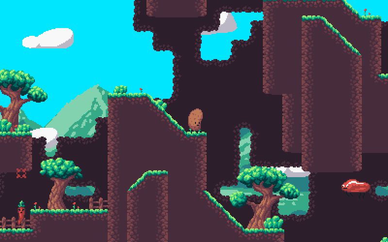

Who is DaFluffyPotato?
DaFluffyPotato(me) is a game developer who mostly works in Python and is known to make almost anything with Pygame even if it doesn't make sense. I've learned enough of various languages (C++, C#, Java, Lua, and JavaScript) to re-learn them easily if I ever need them, but I still prefer Python. I'm also known for my constant usage of pixel art in all of my games.
I have made many games, the more recent of which(although almost exclusively game jam games) are on Itch.io. I'm the sole developer of Super Potato Bruh too.

My Programming Origins
I've been programming since 2013. I started with Python and haven't really had a reason to use anything else because of all the amazing libraries available for Python. I entered my first Ludum Dare in April of 2016(LD 35) while sick. I haven't missed a single Ludum Dare since.
The FAQ That Nobody Ever Asks
What is my favorite game?
My favorite game was Pokemon Red Rescue Team, but recently that changed to Hyper Light Drifter.
Where am I from?
I'm from the United States.
What do I use?
I use Python and Pygame for code, MS Paint and Px Editor for artwork, Bosca Ceoil or LMMS for music, and a microphone or SFXR for sound effects.
The FAQ That I Have Been Asked
Where does the name DaFluffyPotato come from?
It doesn't actually mean anything. I just came up with it out of nowhere and I liked the sound of it. I used to go by CMLSC(and still do sometimes), but nobody could remember the letters, so I needed a new name.
Why do your games look like FEZ?
I honestly don't understand why everybody keeps asking this. I'd expect that people that aren't familiar with pixel art would say my games look like "Mario" or something. For those who are aware of pixel art, I'd expect them to name a title that looks a bit more like my games. While I have been inspired by FEZ's pixel art in the past, most of my inspiration comes from Daniel Linssen and rxi. I also pick up other techniques from just looking at pixel art or figuring it out on my own. Click here to see a timeline of my pixel art.
How did you learn to make games?
When it comes to Python and pixel art, foley, and voice acting, I'm 100% self taught(which is probably why I put most of my code in one file and don't use OOP that much). In music, which is my weak area as of now, I took 8 years of piano lessons.